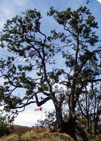
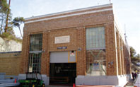
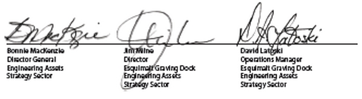

> Envirormental
Program > Environmental Policy Statement
Environmental Policy Statement

It is the goal of the Esquimalt Graving Dock, it partnership
with the ship repair industry, to be the premier
ship repair, construction and maintenance facility
on the west coast of North America.
the Esquimalt Graving Dock and its Users realize that environmental
management is an integral part of attaining that
goal. Through the implementation of an ISO 14001
Environmental management System, we are committed
to managing the actual and potential environmental
impacts of our operations.
To meet our commitment we will:
- Protects the natural environment and prevent pollution.
- Meet or exceed applicable federal, provincial and municipal legislation
and regulations; uphold departmental policies; and abide
by industry standards, practices and other requirements
related to our identified environmental aspects.
- Establish and review our programs, objectives and targets to ensure
we are meeting our environmental commitments.
- Communicate openly with our employees, Users, tenants, contractors, suppliers,
neighbours and other stakeholders regarding our Environmental
Management System and the nature of our operations.
- Educate our employees and the Users of our facility to ensure they are
aware of and understand their roles and responsibilities
in protecting the environment.
- Meet the evolving needs and expectations of our industry and community
through the continual improvement of our systems, programs
and procedures.
